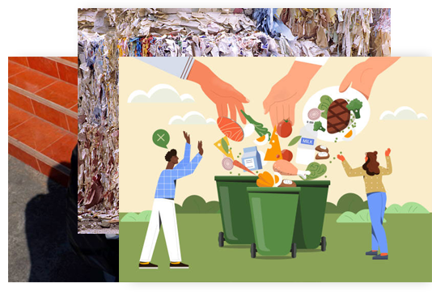

糧食浪費
消費者行為和供應鏈上各種參與者缺乏相互溝通，是中、高收入的國家食物浪費的主因，因此，改變消費者的態度將是一種有效的策略。在收入較高的國家中，消費者往往被鼓勵去購買遠超他們實際所需的食物，例如「買二送一」促銷方式即是其中一個例子。另一個具體的例子則為，食品企業製造的即食產品通常份量過多。而有些餐廳會處心積慮設計出固定價格「吃到飽」的菜單，以刺激消費者儘可能地將食物堆滿他們的盤子。
食物浪費（Food waste，或稱食物廢棄物、食品廢棄物），亦稱為食物耗損（Food loss）、剩食（leftover），意指被丟棄、損失、或沒被吃完的食物。造成食物浪費或耗損的原因很多，可能從生產食物、加工食物、零售食物、或消費食物的各個階段裡頭發生。
Curabitur id eros vehicula, tincidunt libero eu, lobortis mi. In mollis eros a posuere imperdiet.
Watch video過度包裝是指使用材料過多、分量過重、體積過大、成本過高、裝潢過於華麗的包裝。廠商經常過度包裝作為塑造產品形象以及吸引消費者購買的工具。華麗的包裝多採用鮮艷和難降解的材料，對環境的危害較大。
Curabitur id eros vehicula, tincidunt libero eu, lobortis mi. In mollis eros a posuere imperdiet.
Watch video免洗餐具，又稱即用免洗餐具，是泛指僅供一次使用、用後免洗的消耗性廉價餐具。免洗餐具的材質可以是紙、竹、保麗龍、塑膠等，使用免洗餐具可以避免一些唾液傳染的傳染病，如A型肝炎，但用後即丟亦會造成大量垃圾並引起廢棄物問題。
Curabitur id eros vehicula, tincidunt libero eu, lobortis mi. In mollis eros a posuere imperdiet.
Watch video消費者行為和供應鏈上各種參與者缺乏相互溝通，是中、高收入的國家食物浪費的主因，因此，改變消費者的態度將是一種有效的策略。在收入較高的國家中，消費者往往被鼓勵去購買遠超他們實際所需的食物，例如「買二送一」促銷方式即是其中一個例子。另一個具體的例子則為，食品企業製造的即食產品通常份量過多。而有些餐廳會處心積慮設計出固定價格「吃到飽」的菜單，以刺激消費者儘可能地將食物堆滿他們的盤子。
食物包裝方式與食物損耗高度相關，糧農組織報告引用一份瑞典研究發現，1／4的食物浪費與包裝有關，當店家只提供大包裝，消費者被迫多買，往往會變成浪費。另一項WRAP研究發現，1／3受訪者不滿意包裝份量，許多消費者不介意多花些錢購買小包裝；另外商場促銷也鼓勵消費者多買，結果造成更多浪費。在英國，消費者食材花費有近1／3是購買特價品。合作社多年實踐惜食愛物、循環再利用，早期蔬果為祼裝，為減少大量損耗，改為加包裝、冷藏配送，幾經調整，部分較不易受損瓜果類改以網袋包裝。
速食餐廳的演變常被視為現代文化進步的一個象徵，隨著時代的進步與演變，速食文化在各個國家隨處可見，在這類飲食文化造就人類便利的同時，隨之帶來的是一次性餐具(single-use tableware)的數目隨之增加。一次性餐具帶給現代人方便、輕巧的飲食方式，因此，在強調效率的速食業，對於一次性餐具的過度使用，常常是現代人忽略的環境問題之一，例如其焚燒可能造成空氣汙染，或是掩埋可能造成土質汙染，更多的是隨處丟棄的一次性餐具垃圾。
消費者受到外在刺激所引發的，未經深思熟慮地、且是立即地促使消費者在做購買決策時較缺乏理性控制而產生衝動性購買行為，甚至忽略購買的後果。
純衝動型
顧客事先完全無購買願望，沒有經過正常的消費決策過程，臨時決定購買，出於心理反應或情感衝動而“一時興起”或“心血來潮”，或是“圖新奇”、“求變化”。
刺激衝動型
顧客在購物現場見到某種產品或某些廣告宣傳、營業推廣，激起顧客尚未滿足的消費需求，從而引起消費慾望，而決定購買，是購物現場刺激的結果。
計劃衝動型
顧客具有某種購買需求，但沒有確定購買地點和時間。如專門到正在特價的超市購物，但沒有具體的購物清單，因而買“便宜貨”是有計劃的，買何種“便宜貨”則是衝動的。

商品因素
商品是滿足顧客需要的基礎，是影響購買動機最主要的因素。衝動購買行為多發生在顧客捲入購買程度較低、價值低，需頻繁購買的便利品。ex:日用品-->花費不多，又是必需的開支，取決於個人偏好。
顧客特徵
從顧客的氣質分析，衝動型氣質的人，心境變化較劇烈，較多考慮商品外觀和個人興趣，易受廣告宣傳的影響；想象型氣質的人，活潑好動，注意力易轉移，興趣易變，審美意識強，易受商品外觀和包裝的影響。從顧客的心理特徵看，生活必需品最有可能成為衝動購買品。
經濟因素
近年來我國城市居民的收入有很大的提高，而消費者非計劃購買率的增加與收入水平的提高有著直接的關係。這主要是因為，隨着人們富裕程度的提高，對食品、日用品等生活必需品的購買風險意識降低，易造成衝動購買。
環境因素
在超市中廣泛地採用了自選售貨方式，在自由挑選商品的環境下，商家通過通道設計、陳列設計、燈光色彩設計、廣告設計等營銷手段吸引顧客，延長顧客在店內的逗留時間，最大限度地誘發顧客的衝動購買慾望。
促銷因素
現場的促銷形式是影響顧客衝動購買行為的直接誘因，現場營業推廣活動和P0P廣告，有助於激發顧客相應的心理反應，促其衝動購買。當消費者光顧的門店在進行商品促銷的時候，往往能夠激發消費者的購物衝動，使消費者仍因促銷折扣而衝動購物不需要的商品。
1. 建立一個 30 天原則
2. 少去商場、百貨公司等大型購物區（特別是有打折的時候）
3. 少瀏覽綜合型購物網站
4. 掌握自己的衝動，注意身體變化
5. 好好的深呼吸
6. 計算個人生命的價值
7. 購買前先計畫
問自己一些問題
1.這次的購買會大幅改善目前的生活嗎？
2.這次的購買會讓自己感覺更好嗎？是哪方面的好？
3.它能夠幫助自己達到任何一項生活目標嗎？
4.它會讓自己的生活更簡單充實嗎？